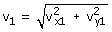
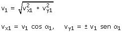

|
Solución de problemas Método Se plantean ecuaciones del tiro visto por el observador. Estas ecuaciones valen para todos los apartados del problema, nunca hay que cambiarlas Cada pregunta del problema tratará de una situación del móvil donde se conoce el valor de una de las variables y se descono-cen las otras tres. Se aplican las ecuaciones del movimiento a esta situación y se despejan las dos incógnitas Puede ocurrir que el problema de el módulo o la dirección de la velocidad que no figuran en las ecuaciones del tiro. Si se cono-ce el módulo de la velocidad en el instante t1 habrá que añadir la expresión:  Si se conoce la dirección α1 de la velocidad en el instante t1 habrá que añadir las expresiones:  Comprobaciones de los resultados Al ganar altura se pierde velocidad y viceversa La inclinación de la velocidad siempre disminuye Soluciones no validas El tiempo siempre tiene que ser positivo Posición o velocidad no pueden ser imaginarios. Puede haber valores de posición limitados por barreras (Ejemplo: por debajo del suelo) Faltan parámetros Puede ocurrir que en un problema no den la velocidad inicial o el ángulo de tiro o ninguno de ellos Método Se plantean las ecuaciones del movimiento dejando como incóg-nita los parámetros. El problema dará una o más situaciones donde se conocerán los valores de las variables. Se aplican las ecuaciones del movimien-to a estas situaciones y se despejan los parámetros. Aviso |